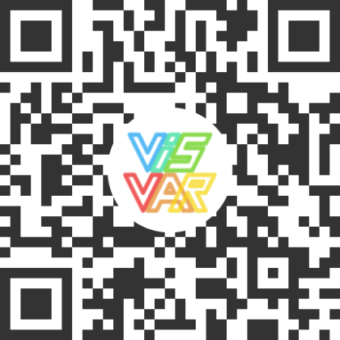

Trends in Information Visualization

Authors. Dominikus Baur, Michael Sedlmair, Raphael Wimmer, Yaxi Chen, Sara Streng, Sebastian Boring, Alexander De Luca, Andreas Butz
Venue. LMU-MI-2010-1: Media Informatics Advanced Seminar (2010) Technical Report
Type. Technical Report
Materials.
PDF
Abstract. This report provides an overview of current applications and research trends in the field of
information visualization. The content ranges from classical information visualization aspects
such as network visualization, multivariate data representation and multiple coordinated
views to topics beyond the traditional scope such as aesthetics, collaboration or casual
aspects in information visualization.
